01
电源启动类
承载设备开机、关机、启动、暂停与停止等核心控制。
统一 LED 载体下的信息分类、场景布局与按键交互规则，建立跨品类清晰、一致且易理解的界面与操作体验。
统筹各品类界面信息和功能，所有信息可分为下面七类：
承载设备开机、关机、启动、暂停与停止等核心控制。
用于切换设备的工作模式、使用场景或任务类型。
承载用户主要任务，是程序选择和功能操作的核心区域。
为主程序提供增强、辅助或个性化能力，可按需选择。
用于调节温度、时间、档位、转速等任务参数。
显示运行状态、任务阶段、提醒、异常及操作反馈。
集中显示时间、温度、档位以及其他可变数值。
同类信息在界面中需位于相同区域，并依据重要度、用户使用习惯和交互易用性进行成组化布局。
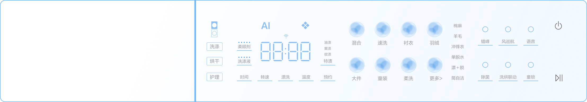
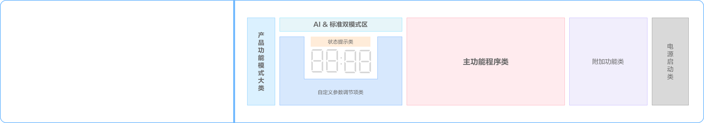
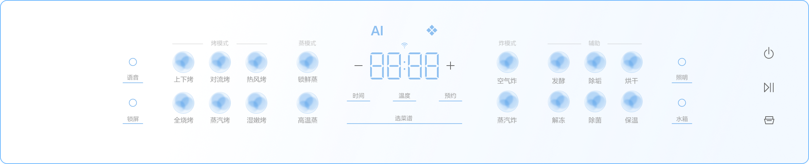
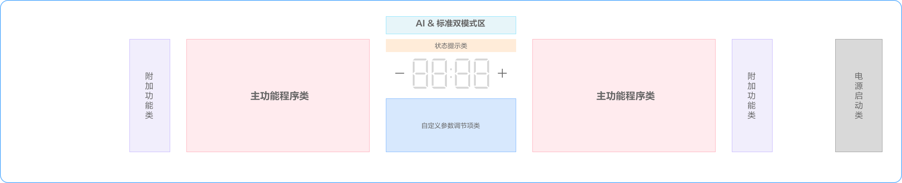
统筹各品类 UI 界面与产品机身的位置关系，显示界面的布局逻辑分为两类。
中心向两侧对称展开，中心区域是模式选择、参数与调节； 外侧是主功能程序选择项，再外侧是附加辅助功能开关； 电源和启停键独立置于最右侧。
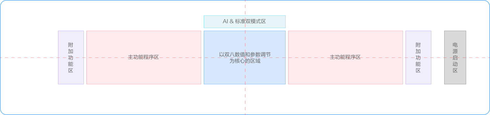
中心向两侧对称展开，中心区域是模式选择、参数与调节。 为了聚合用户交互中心，电源和启停键也可以放置在中心下侧； 外侧是主功能程序选择项，再外侧是附加辅助功能开关。
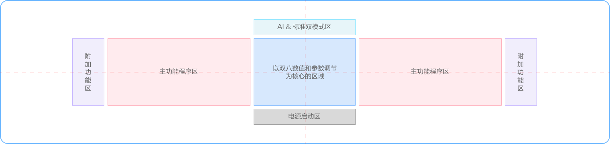
界面中的核心元素与滚筒洗衣机机身筒的中心位置保持对齐， 模式、时间及主要状态信息集中在视觉中心，其余功能围绕核心区域有序展开。
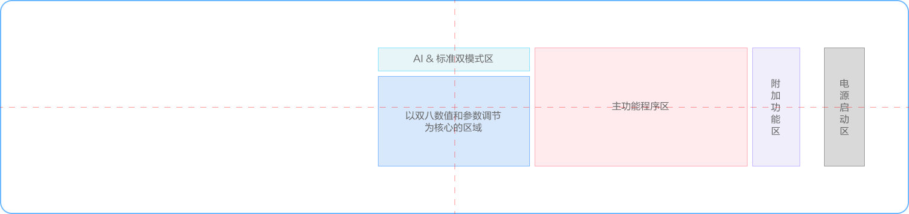
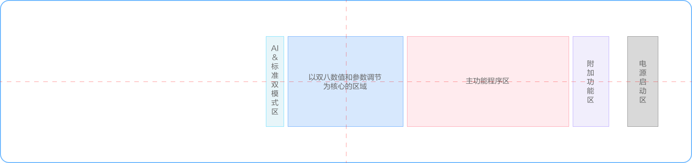
以机身筒中心作为界面视觉锚点，核心状态保持在中心区域， 程序、参数、附加功能以及启停操作按照任务关系向两侧或周边展开。
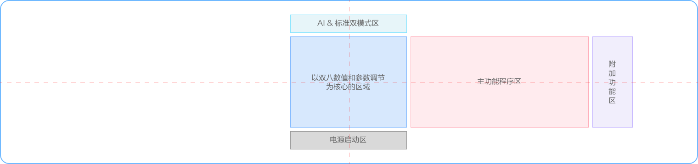
信息分组要以统一方向维度分割，保障用户交互流是一个线性大方向， 不要出现“Z”型、“N”型交叉折返。
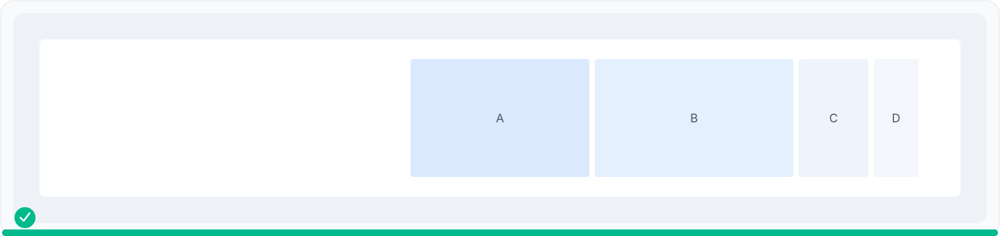
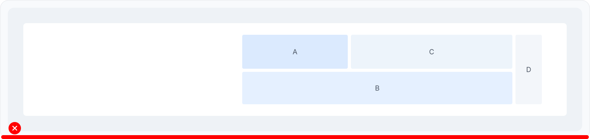
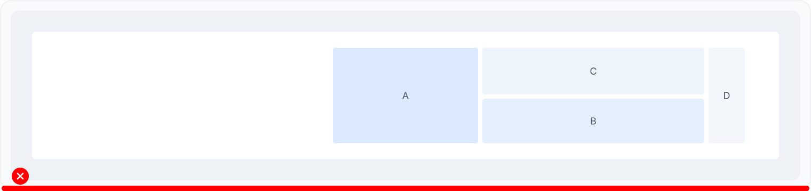
以核心状态为视觉锚点，向两侧组织程序、参数及附加功能，并适配不同显示区域高度。
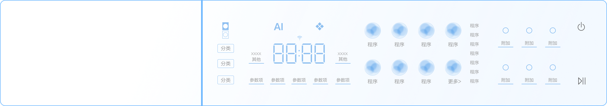
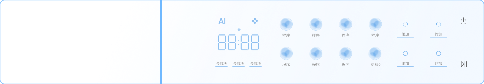
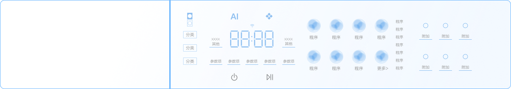
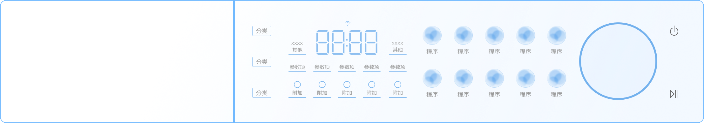
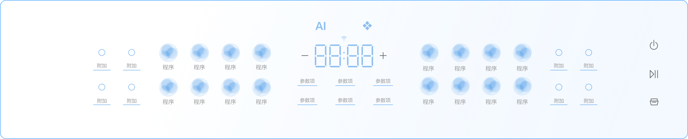
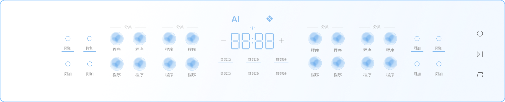
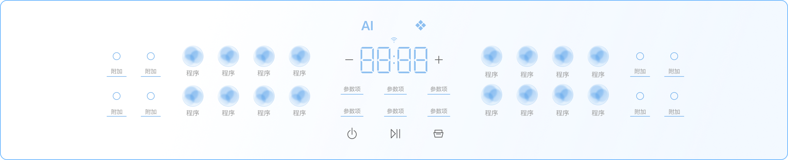
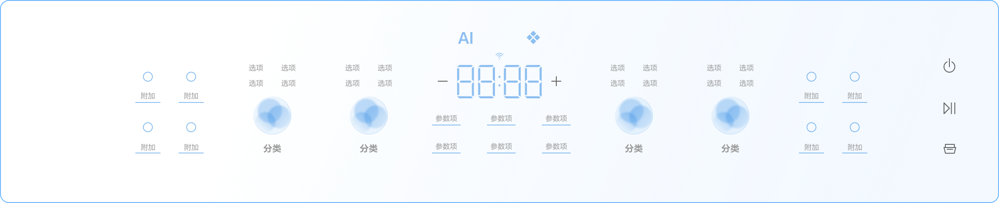
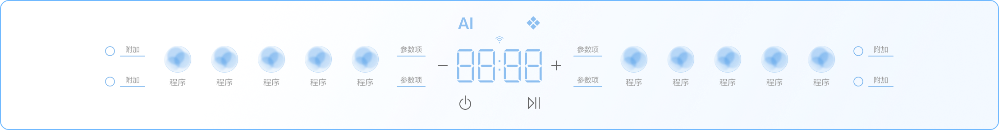
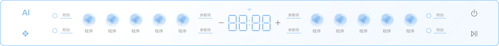
洗碗机等产品的显示区域位于门体上沿侧面时，界面可向操作侧集中布局，以操作可达性优先。
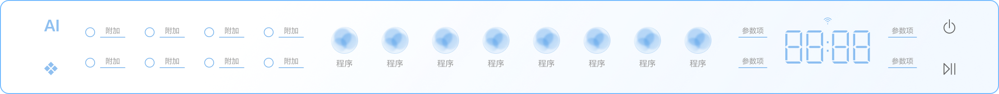
以烟机为代表，界面不依赖中心数值显示时，按任务关系组织功能与状态，保持操作路径清晰。
适用于冰冷与空调等竖向显示区域，依据载体宽度选择宽界面或窄界面结构。
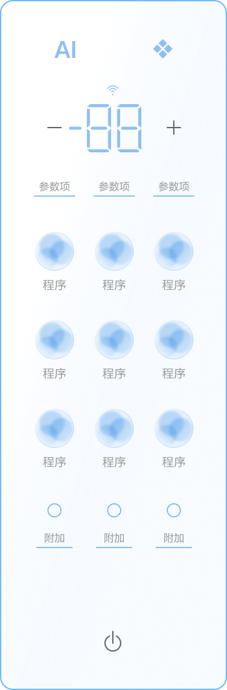
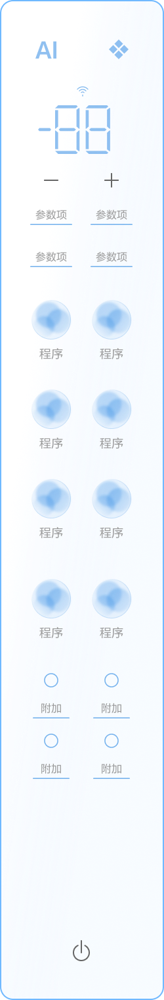